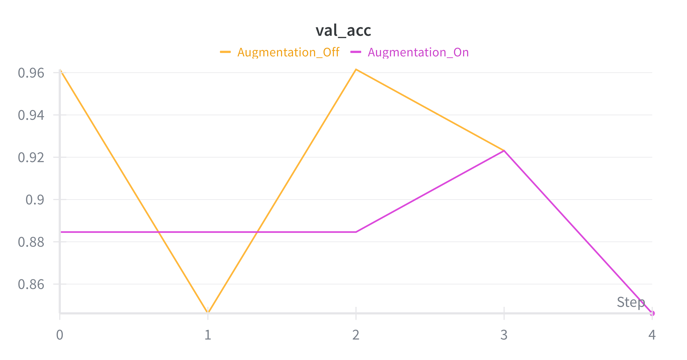
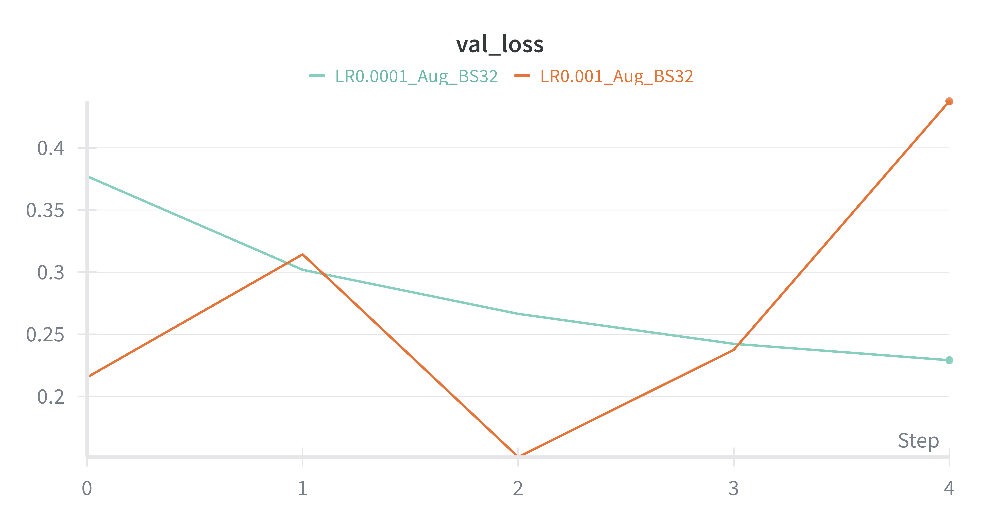
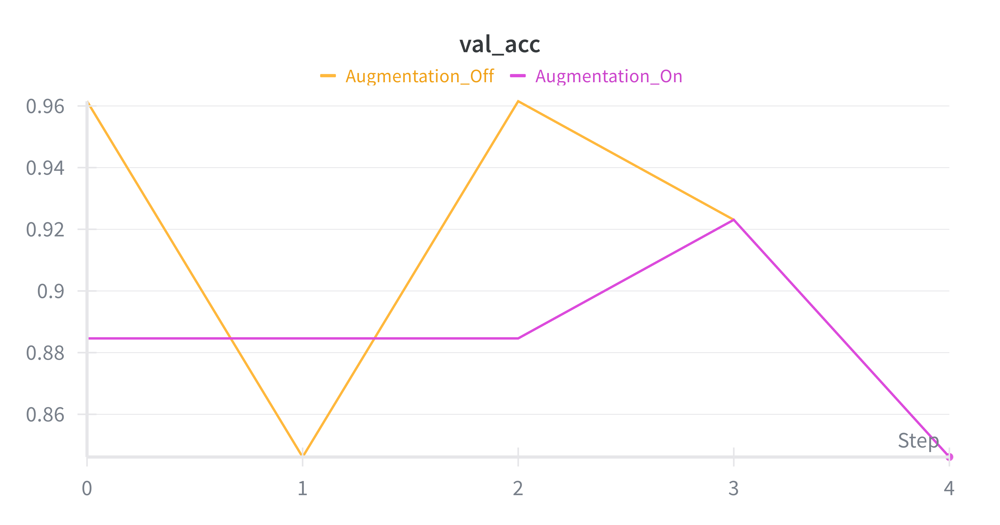
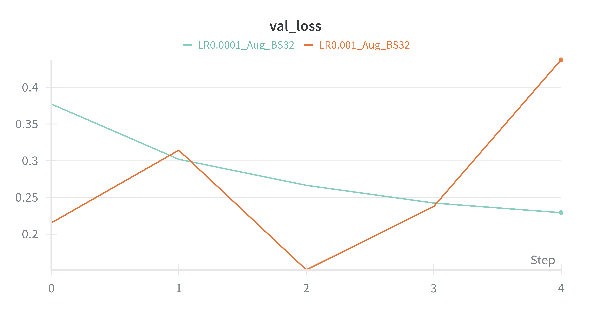

Performance Metrics (AlexNet)
| Metric | Value |
|---|---|
| Training Accuracy | ~0.95 |
| Validation Accuracy | ~0.92 |
| Validation Loss | ~0.18 |
| False Positive Rate | ~0.05 |
| False Negative Rate | ~0.03 |
Training & Validation Charts
AlexNet
 



Additional Experiments
- Batch Size Experiments (16 vs 32 vs 64) – small batch sizes increased convergence speed but slightly decreased stability.
- Learning Rate Experiments (0.001 vs 0.0001) – smaller learning rates reduced oscillation in loss but required more epochs for convergence.
- Data Augmentation – improved validation accuracy by ~3% and reduced overfitting, especially under diverse lighting/terrain conditions.
- Alternative Architectures – ResNet18 achieved higher validation accuracy (~0.94) but required longer training; VGG16 showed comparable performance to AlexNet.
All values are based on the SafeStep dataset collected for mine detection. Accuracy may improve with further hyperparameter tuning, increased dataset size, and model refinement.